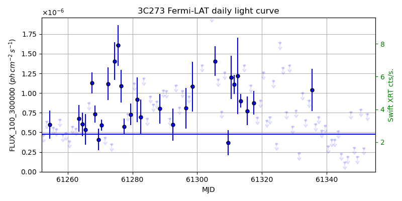
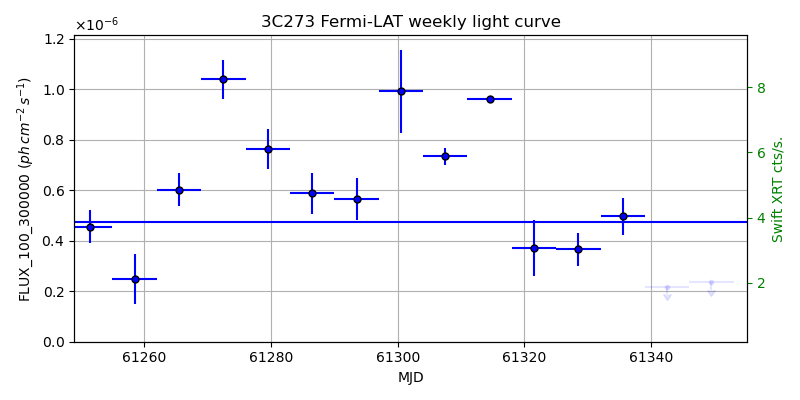
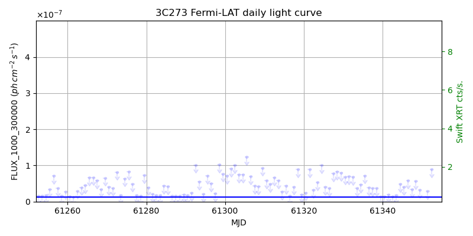
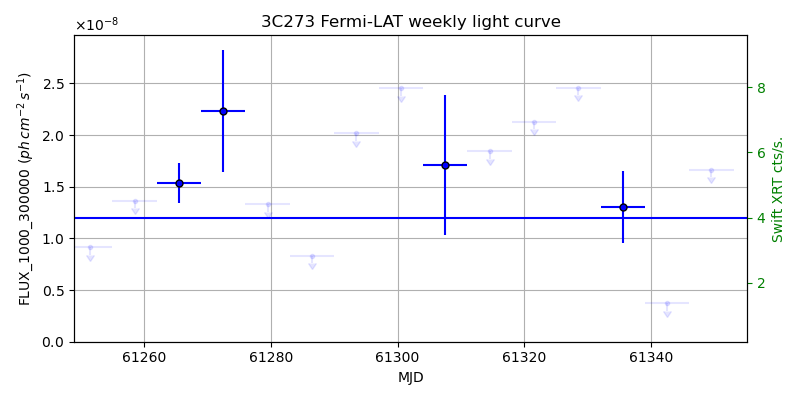

LAT Lightcurve site: https://fermi.gsfc.nasa.gov/ssc/data/access/lat/msl_lc/source/3C_273
Swift site: https://www.swift.psu.edu/monitoring/source.php?source=3C273
NED: Query
Time of last update of this page: UT: 2026-11-13 16:25 (MJD: 61357.684)
| Property | Value |
|---|---|
| R.A. | 12:29:06.72 |
| Dec. | 2:03:07.2 |
| z | 0.158 |
| 3FGL SpectrumType | LogParabola |
| 3FGL PL Index | |
| 3FGL Flux_100_300000 | 4.75e-07 1 / (s cm2) |
| 3FGL Flux_1000_300000 | 1.20e-08 1 / (s cm2) |
| 3FGL Flux >200 GeV | 4.06e-13 1 / (s cm2) |
| 3FGL Extrap. Crab >200 GeV | 0.00 |
| 3FGL Flux After EBL Absorption >200GeV | 2.71e-13 1 / (s cm2) |
| 3FGL EBL Crab Fraction >200GeV | 0.00 |

| MJD | dMJD | Flux | dFlux | Frac3FGL | FracCrab>200GeV | EBLFracCrab>200GeV |
|---|---|---|---|---|---|---|
| 61348.50 | 0.50 | 3.06e-07 | 0.00e+00 | 0.00 | 0.00 | 0.00 |
| 61349.50 | 0.50 | 1.89e-07 | 0.00e+00 | 0.00 | 0.00 | 0.00 |
| 61350.50 | 0.50 | 7.88e-07 | 0.00e+00 | 0.00 | 0.00 | 0.00 |
| 61351.50 | 0.50 | 3.01e-07 | 0.00e+00 | 0.00 | 0.00 | 0.00 |
| 61352.50 | 0.50 | 7.35e-07 | 0.00e+00 | 0.00 | 0.00 | 0.00 |

| MJD | dMJD | Flux | dFlux | Frac3FGL | FracCrab>200GeV | EBLFracCrab>200GeV |
|---|---|---|---|---|---|---|
| 61321.50 | 3.50 | 3.72e-07 | 1.11e-07 | 0.78 | 0.00 | 0.00 |
| 61328.50 | 3.50 | 3.66e-07 | 6.45e-08 | 0.77 | 0.00 | 0.00 |
| 61335.50 | 3.50 | 4.98e-07 | 7.37e-08 | 1.05 | 0.00 | 0.00 |
| 61342.50 | 3.50 | 2.18e-07 | 0.00e+00 | 0.00 | 0.00 | 0.00 |
| 61349.50 | 3.50 | 2.37e-07 | 0.00e+00 | 0.00 | 0.00 | 0.00 |

| MJD | dMJD | Flux | dFlux | Frac3FGL | FracCrab>200GeV | EBLFracCrab>200GeV |
|---|---|---|---|---|---|---|
| 61348.50 | 0.50 | 5.59e-08 | 0.00e+00 | 0.00 | 0.00 | 0.00 |
| 61349.50 | 0.50 | 3.18e-08 | 0.00e+00 | 0.00 | 0.00 | 0.00 |
| 61350.50 | 0.50 | -1.00e+00 | 0.00e+00 | 0.00 | 0.00 | 0.00 |
| 61351.50 | 0.50 | 2.90e-08 | 0.00e+00 | 0.00 | 0.00 | 0.00 |
| 61352.50 | 0.50 | 8.89e-08 | 0.00e+00 | 0.00 | 0.00 | 0.00 |

| MJD | dMJD | Flux | dFlux | Frac3FGL | FracCrab>200GeV | EBLFracCrab>200GeV |
|---|---|---|---|---|---|---|
| 61321.50 | 3.50 | 2.13e-08 | 0.00e+00 | 0.00 | 0.00 | 0.00 |
| 61328.50 | 3.50 | 2.46e-08 | 0.00e+00 | 0.00 | 0.00 | 0.00 |
| 61335.50 | 3.50 | 1.31e-08 | 3.48e-09 | 1.09 | 0.00 | 0.00 |
| 61342.50 | 3.50 | 3.71e-09 | 0.00e+00 | 0.00 | 0.00 | 0.00 |
| 61349.50 | 3.50 | 1.67e-08 | 0.00e+00 | 0.00 | 0.00 | 0.00 |
--------------------------------------------------------- Using user-supplied coords: 12:29:06.72 2:03:07.2 2000 --------------------------------------------------------- FLWO UT night of: 2026-11-14 Local Sid. @ Midnight: 03:09 Sunset (-15.0) (local, UT): 18:35 01:35 Sunrise (-15.0) (local, UT): 05:42 12:42 Moonrise (local, UT): Moonset (local, UT): 20:50 03:50 Moon phase: 0.22 --------------------------------------------------------- AzTime LSID UT Obj_el Obj_az Mn_el Mn_az Sep. --------------------------------------------------------- 18:35 21:44 01:35 -38.2 302.4 20.1 218.2 97.8 19:05 22:14 02:05 -43.4 309.6 16.0 223.7 98.0 19:35 22:44 02:35 -48.0 318.1 11.6 228.6 98.2 20:05 23:14 03:05 -51.9 328.1 6.9 233.2 98.4 20:35 23:44 03:35 -54.7 339.8 2.0 237.3 98.6 21:05 00:14 04:05 -56.2 352.8 -2.2 241.2 98.8 21:35 00:44 04:35 -56.3 6.3 -9.0 244.8 99.0 22:05 01:14 05:05 -54.8 19.4 -14.6 248.2 99.3 22:35 01:44 05:35 -52.1 31.2 -20.4 251.4 99.5 23:05 02:14 06:05 -48.3 41.3 -26.2 254.5 99.8 23:35 02:44 06:35 -43.7 49.9 -32.1 257.5 100.1 00:05 03:14 07:05 -38.6 57.2 -38.1 260.6 100.4 00:35 03:45 07:35 -33.0 63.4 -44.2 263.8 100.6 01:05 04:15 08:05 -27.1 68.9 -50.2 267.1 101.0 01:35 04:45 08:35 -21.1 73.8 -56.3 270.9 101.3 02:05 05:15 09:05 -14.9 78.2 -62.4 275.3 101.6 02:35 05:45 09:35 -8.6 82.4 -68.4 281.1 101.9 03:05 06:15 10:05 -1.3 86.4 -74.2 289.9 102.3 03:35 06:45 10:35 4.4 90.4 -79.6 306.2 102.6 04:05 07:15 11:05 10.7 94.3 -83.2 343.5 102.9 04:35 07:45 11:35 17.0 98.5 -82.1 35.1 103.3 05:05 08:15 12:05 23.3 102.9 -77.4 61.2 103.6 05:35 08:45 12:35 29.4 107.6 -71.8 73.4 103.9 05:42 08:52 12:42 30.7 108.7 -70.5 75.2 104.0 --------------------------------------------------------- Dark hours >55 deg.: 0.00